Education
• 實踐大學 服裝設計研究所(2022/09-) Shih Chien University Fashion Design Department.
實踐大學 服裝設計研究所•亞東科技大學 材料與纖維系服裝設計組 (2018-2022)Asia Eastern University of Science and Technology of Materials and Textiles
亞東科技大學材料與纖維系•復興商工 美工科(2015-2018) Fu-Hsin Trade & Arts School
復興商工美工科Work
●大專生研究計畫（科技部）
參與超臨界二氧化碳染色計畫(2022/03-2022/08)
●旭榮集團_旭寬企業股份有限公司
商品企劃實習生(2021/07-2022/02)
●與服裝品牌-MIXCLO長期合作 /擔任旭榮集團多次『新一季-新品走秀Model』
MIXCLO商品連結.jpg)
.jpg)
.jpg)
.jpg)
.jpg)
.jpg)
外拍/棚拍(2020/07-now)
Awards
•大學專題作品 | 入圍『決賽』
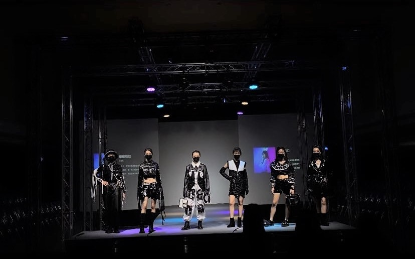 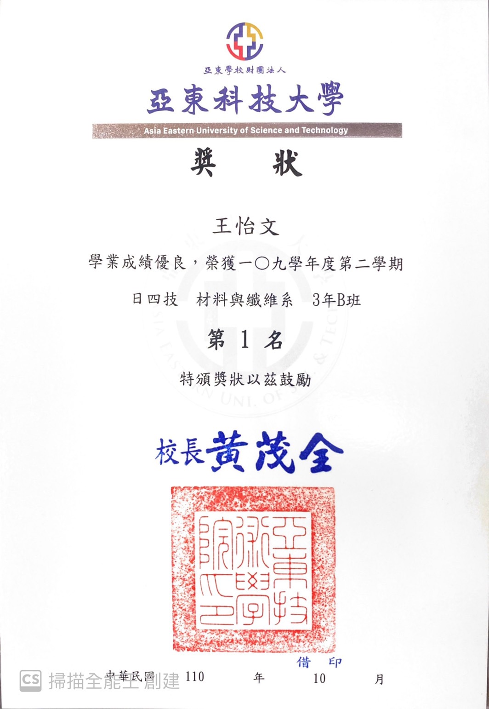 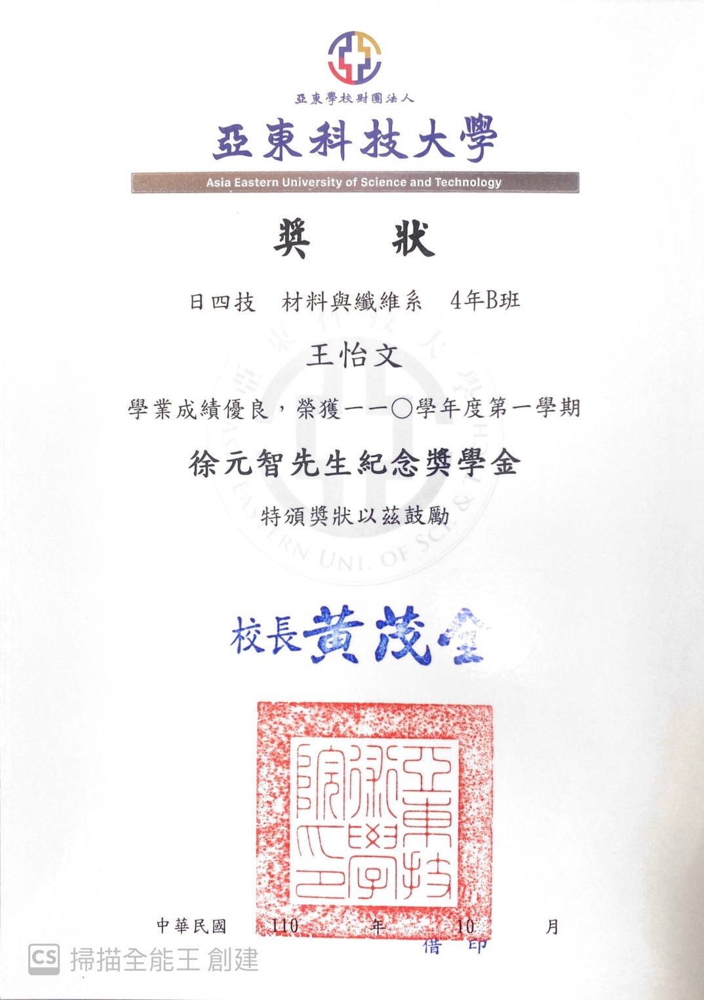 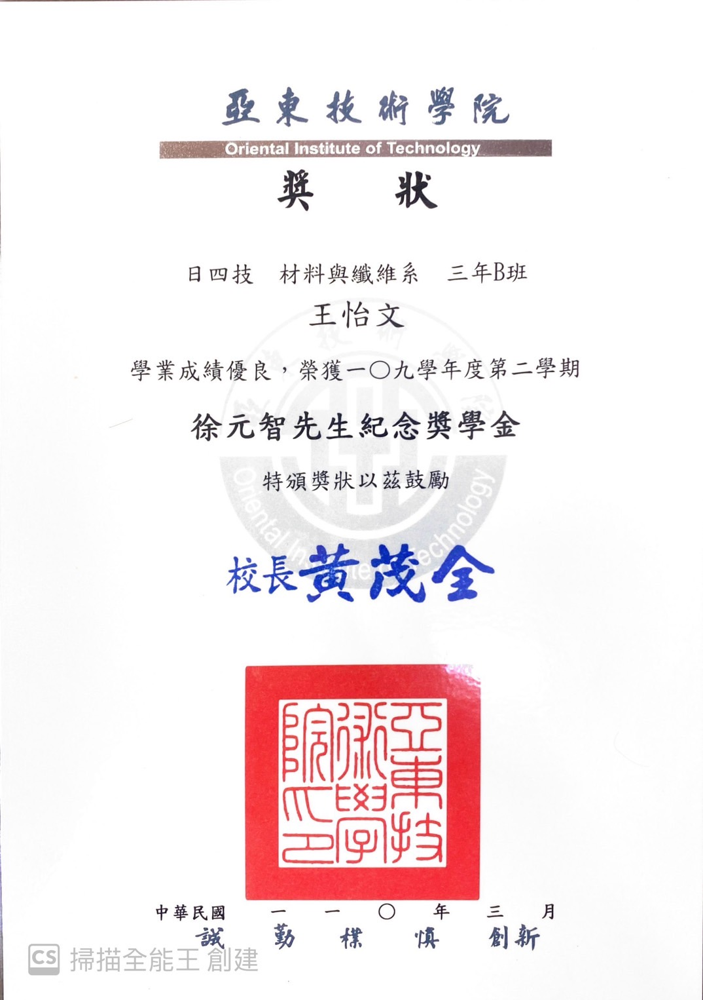•1092 學期 -『全班第一名』
•109 學年度總學期 -『第二名』
•109 年第二學期徐元智先生紀念獎
•110年第一學期徐元智先生紀念獎
•108 年南山菁英領袖夢想獎
•服裝作品 | 入圍到世貿新一代展覽 ( 疫情新一代取消 )
•高中專題『尋房記』| 入圍到世貿新一代展覽『佳作』
•入圍於台北福華大飯店 |『作品動態秀展演』
•於 T Fashion 時尚基地 |『動態秀展演』
Skills
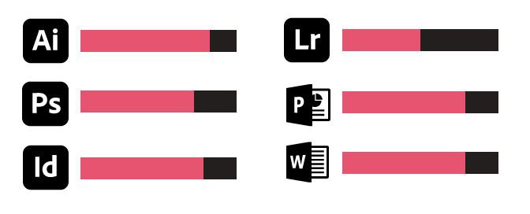[課程] 經濟部iPAS塑膠材料應用工程師 (2022/02-2022/05，共24小時)
[課程] 經濟部iPAS色彩規劃管理師證照(2021/09-2022/05，共96小時)
[課程]樹人高級家事商業職業學校--修滿食品職群及家政職群 (共96小時)
[課程]e等公務園(政府平台)--資工相關課程(共39小時)
Experience
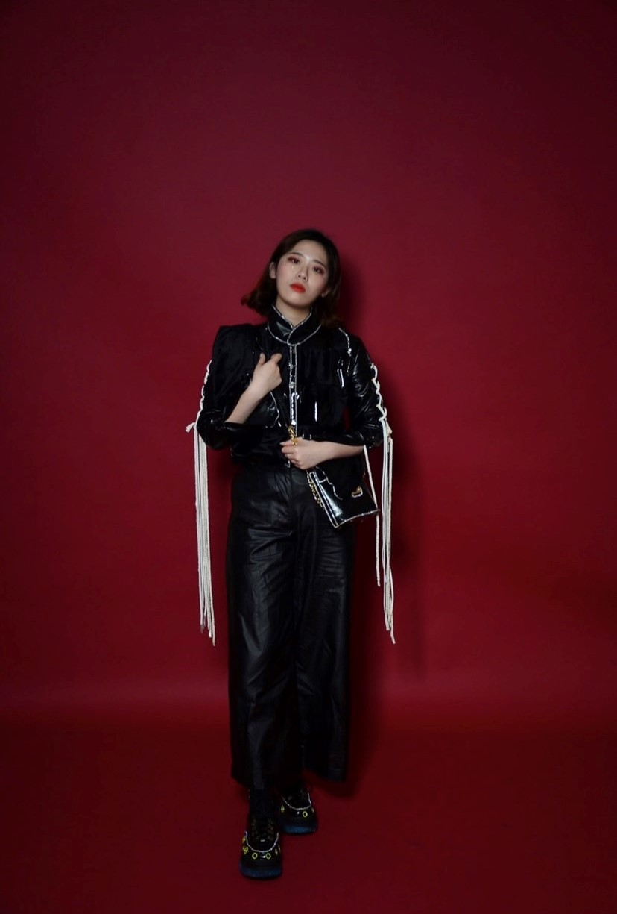 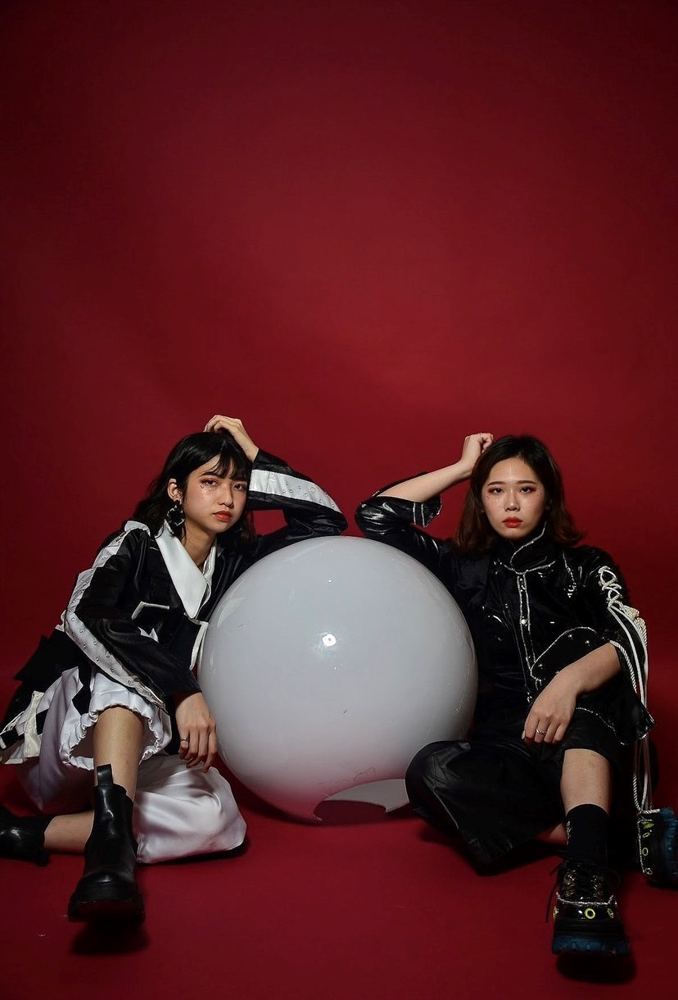 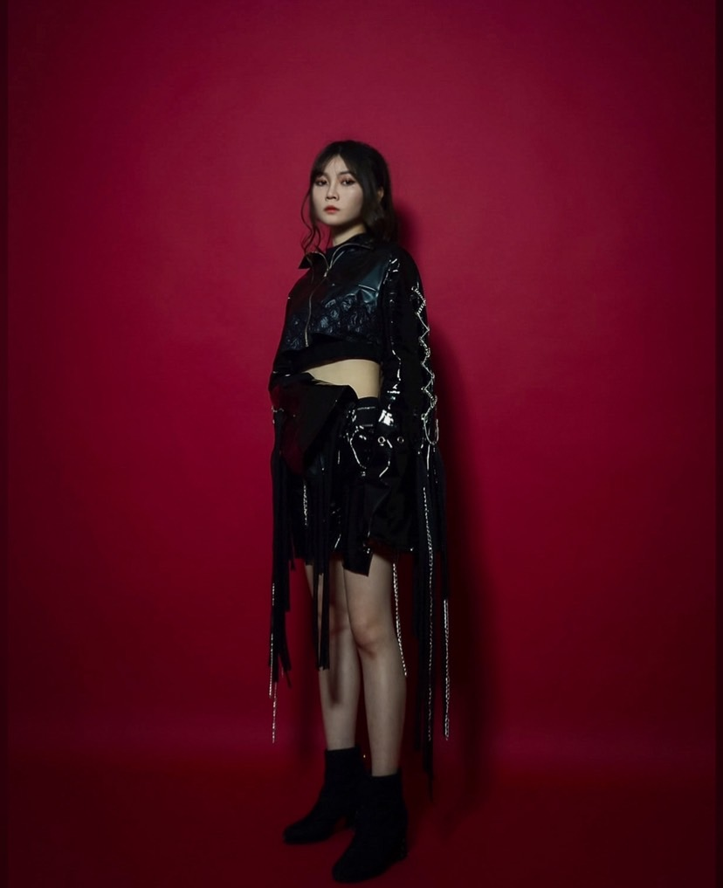 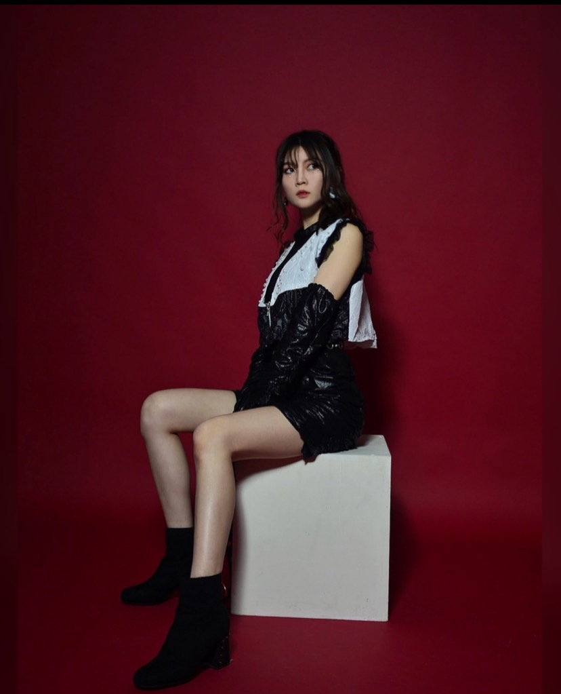•1081/1082 幹部 •於樹人家商 修滿食品職群及家政職群1年
•1091/1092 幹部 •參與聚陽集團-青年計畫
•家扶中心擔任志工 •校歌比賽 - 服裝造型獎
•南山菁英領袖發表會 •2023新春夏-流行趨勢發表會
•纖維紡織科技研討會 第 37 屆 |『發表』 •擔任旭榮集團『新一季-新品走秀Model』
•纖維紡織科技研討會 第 39屆 |『發表』
license
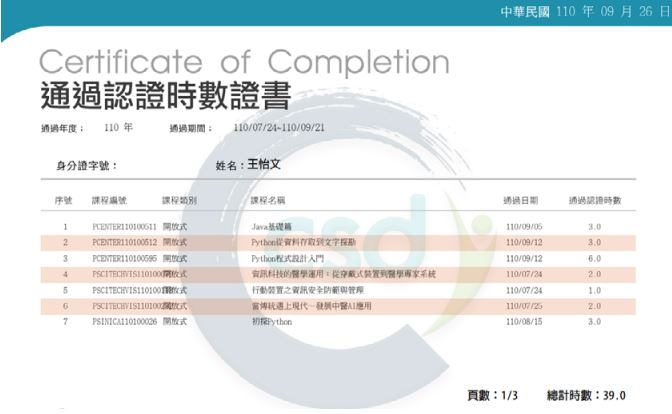 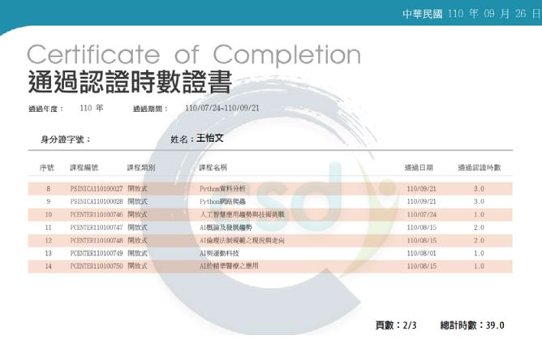[課程] 經濟部iPAS塑膠材料應用工程師 (2022/02-2022/05，共24小時)
[課程] 經濟部iPAS色彩規劃管理師證照(2021/09-2022/05，共96小時)
[課程]樹人高級家事商業職業學校--修滿食品職群及家政職群 (共96小時)
[課程]e等公務園(政府平台)--資工相關課程(共39小時)